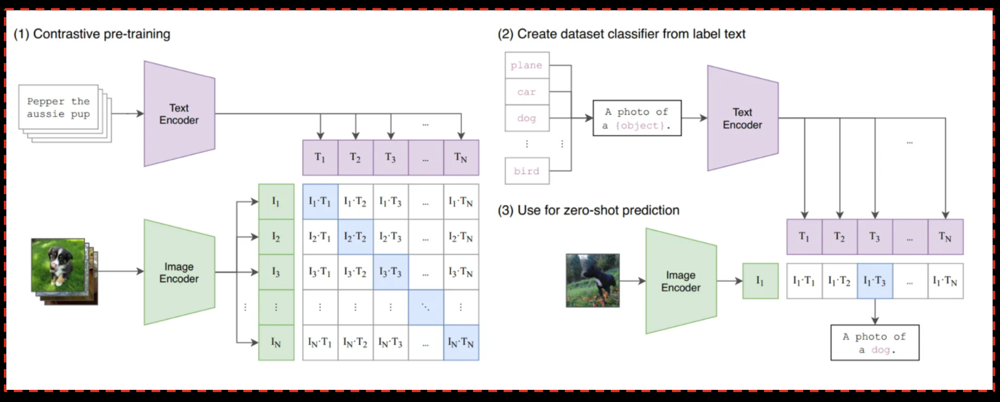
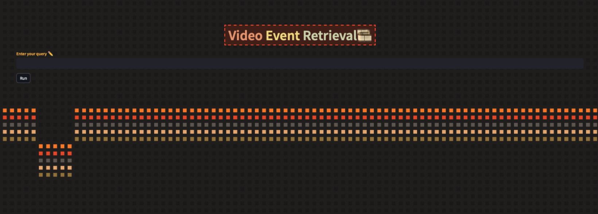

001 : Video Event Retrieval for Vietnamese News
I developed this project while participating in the AI-Challenge competition in 2023, where I utilized cutting-edge AI technologies, including Zero-Shot learning with CLIP model and cosine similarity calculation, to retrieve event-specific videos from visual data based on Textual KIS queries.
Project Color Palette
Model Framework

Summary of the CLIP Model in the paper Learning Transferable Visual Models From Natural Language Supervision
Model Framework for Zero-Shot Video Event Retrieval:
- Data Retrieval and Preprocessing:
- Obtain video keyframes organized into subdirectories, representing different videos.
- Prepare the textual query for the video event retrieval task.
- Feature Extraction using CLIP:
- Utilize the pre-trained CLIP model (
`openai/clip-vit-base-patch32`) for extracting features from both textual queries and video keyframes. - For each keyframe:
- Load the image.
- Extract image features using CLIP and convert them into numerical representations.
- Utilize the pre-trained CLIP model (
- Cosine Similarity Calculation:
- Compute cosine similarity between the extracted features of the textual query and the features of each keyframe.
- Determine the most similar keyframes based on their similarity scores.
- Zero-Shot Inference Process:
- Perform zero-shot inference by inferring associations between textual queries and video keyframes without specific training on these pairs.
- Leverage the pre-trained CLIP model's generalization capabilities learned from a diverse dataset of images and text.
- Result Retrieval and Video Clipping:
- Retrieve the best matching keyframe based on highest similarity score.
- Extract a segment of the video around the identified keyframe to create a video clip that represents the sought-after event.
- Further Analysis or Processing:
- Optional: Conduct additional analysis or processing on the retrieved video clip or related metadata.
Key Points:
- Zero-Shot Inference: The model performs video event retrieval without direct training on the specific textual queries or video keyframes, relying on the pre-trained CLIP model's ability to understand and generalize from diverse image-text pairs.
- Semantic Understanding: The model leverages semantic relationships learned during pre-training to associate textual descriptions with visual content without explicit training on these specific associations.
- Generalization: By utilizing the CLIP model's pre-existing knowledge learned from a diverse dataset, the model extends its understanding to perform tasks on previously unseen data.
Vietnamese News Dataset
The dataset used in the Video Event Retrieval application is provided by the competition organizers, comprising videos related to news bulletins produced by various Vietnamese broadcasters and extracted from YouTube.
The dataset consists of 20 subdirectories, corresponding to news sources, including 'VTV 60 Seconds' program and several others.
The varying number of videos in each subdirectory showcases the diversity of the data sources, with the duration of each video ranging from 15 to 30 minutes.
Each subdirectory is accompanied by a number of keyframes, representing iconic images extracted from the respective videos.
- Number of videos: 738 videos (in MP4 format)
- Number of keyframes: 201,745 frames (in JPG format)
Data statistics required for use:
| Folder | # Videos | # Keyframes |
|---|---|---|
| L01 | 31 | 7,658 |
| L02 | 30 | 8,820 |
| L03 | 31 | 8,554 |
| L04 | 31 | 9,908 |
| L05 | 28 | 7,781 |
| L06 | 28 | 8,980 |
| L07 | 31 | 8,694 |
| L08 | 29 | 9,779 |
| L09 | 30 | 8,074 |
| L10 | 30 | 9,058 |
| L11 | 31 | 8,631 |
| L12 | 31 | 8,294 |
| L13 | 30 | 7,865 |
| L14 | 30 | 8,835 |
| L15 | 31 | 8,404 |
| L16 | 31 | 8,914 |
| L17 | 33 | 9,260 |
| L18 | 23 | 4,961 |
| L19 | 99 | 24,245 |
| L20 | 100 | 25,030 |
Advantages of the dataset:
| Advantages | Impact |
|---|---|
| Diversity | This dataset is diverse in content, covering events both within and outside the country, cultural activities, sports, travel, culinary, fashion, and news alerts. |
| Data Size | The dataset is large with a significant number of videos, providing the model with opportunities to learn from various types of data, improving its understanding and differentiation between contexts. |
| Accompanying Keyframes | The inclusion of accompanying keyframes by the organizers helps in saving time for extracting representative images for videos and content processing. |
Disadvantages of the dataset:
| Disadvantages | Impact |
|---|---|
| Image Quality | Some videos from security cameras have low image quality and lack color information, posing a challenge in extracting keyframes and using the CLIP model. |
| Content Diversity | The diversity of content in news videos poses requirements for diverse training data and the model's capability to understand and differentiate between various content types. |
| Data Size | A large dataset is both an advantage and a disadvantage as it requires significant computational resources. |
| Audio and Text Conversion | One issue with news videos is the amount of accompanying information summarized in the presenter's speech. Processing information from audio and text demands the ability to convert from speech to text. |
The dataset is a crucial factor for the news video application. The diversity of news video content needs to be represented in the dataset to ensure that the model can comprehend and distinguish between various types of videos.
However, handling videos with low quality and multiple data sources, reliant on computational resources, poses a significant challenge.
Feature Extraction For Text Query And Keyframes
Keyframe feature extraction:
Keyframe feature extraction is a crucial step in video processing and can facilitate concise and effective representations for image-based tasks within videos.
The process of extracting keyframe features involves the following steps:
- Prepare the CLIP model: Initially, I load the CLIP model and necessary components such as the processor.
- Identify the directory containing keyframes: Determine the path to the directory containing keyframes extracted from the video.
- Retrieve a list of video-specific subdirectories: Gather all subdirectories containing keyframes corresponding to each video.
- Extract features from each keyframe: For each keyframe in every video, I undertake the following steps:
- Open the keyframe image using the PIL library.
- Encode the keyframe image using the CLIP model to obtain its feature vector.
- Store the keyframe features and associate them with the relative path of the keyframe within each video. - Store the features into a JSON file: Finally, after extracting features from all keyframes, I store them in a JSON file for further data processing purposes.
Text feature extraction:
When a user inputs a text query and initiates the search process, the application utilizes the CLIP model to extract text features from the query. This process involves the following steps:
- Encode the Query: The text query gets encoded using the CLIP model employing a text encoder. This transforms the query into a vector representation based on its content.
- Extract Text Features: After encoding, the model extracts text features from the vector representation. These features typically have a dimensionality of 512.
Cosine Similarity
After obtaining both the text features from the query and the keyframe features from the video, the comparison process is performed by calculating the cosine similarity.
Cosine similarity is a measurement of similarity between two vectors in a multi-dimensional space. It's commonly used in various statistical, machine learning, natural language processing, and other fields for comparing data points.
cos(θ) = Σ Ai * Bi / (||A|| * ||B||)
- cos(θ) is the cosine similarity.
- Ai and Bi are elements of vectors A and B respectively.
- Σ denotes the sum of all elements in the vectors.
- ||A|| and ||B|| represent the magnitudes (Euclidean norms) of vectors A and B.
- Distance Value:
The result of cosine similarity ranges from -1 to 1. A value of 1 indicates complete similarity between two vectors, 0 indicates no similarity, and -1 represents complete dissimilarity (completely unlike each other). - Size Independence:
Cosine similarity is not influenced by the size of vectors. This means it's an appropriate similarity measure when comparing similarity between vectors of different sizes. - Operates in Multidimensional Space:
Cosine similarity works effectively in multidimensional space, where each dimension represents a distinct attribute of the data. - Commonly Used in Comparison Tasks:
Cosine similarity is frequently employed in comparison tasks, such as comparing similarity between texts, images, sounds, or data features.
The result is a list of keyframes sorted in descending order based on their similarity scores.
Finally, upon obtaining the keyframe most similar to the text query, the application will access the video database on HDFS to extract a 10-second video clip based on the index of the keyframe.
The Limitations Of The Application
The Video Event Retrieval application has made progress in searching and retrieving events in videos based on text queries.
HoIver, it faces several limitations and unachieved capabilities due to computational resource constraints and specific characteristics of the CLIP model:
- Accuracy in Extracting Information from Home Security Videos: The CLIP model might encounter reduced effectiveness when applied to low-quality home security videos recorded in black and white with low light conditions. The accuracy of image recognition in such environments is a challenge, impacting the efficiency of event retrieval and reducing accuracy.
- Efficiency in Searching Information Not Present in Keyframes: Relying primarily on keyframes for search and retrieval might limit the effectiveness if specific user-requested information isn't included in the extracted keyframes. Developing a mechanism to analyze the entire video content instead of solely relying on keyframes may require enhancements in model capability or real-time object classification.
- Ineffective Audio Information Extraction: The application's focus on image and text-based information extraction lacks efficiency in extracting valuable details from video audio, especially in news videos or scenarios with multiple simultaneous events. Extracting and processing audio, along with speech-to-text conversion, could demand additional resources and computation.
- Inaccurate Vietnamese Text Extraction and OCR: Challenges persist in extracting Vietnamese text and recognizing it accurately within keyframes due to CLIP's primarily English focus. Limited understanding and search capability for Vietnamese text in queries might hinder effective searches in a Vietnamese context, requiring optimization and improvements in Vietnamese text recognition and OCR techniques.
- Slow Computation Time and Application Response: The application's computational inefficiency, particularly due to the extensive dataset and model limitations, leads to slow response times, taking approximately 5-10 minutes for a single query result, affecting competition participation with time constraints.
These challenges highlight the need for improvements in extracting information from specific video types, enhancing language understanding and OCR for better accuracy, and optimizing computational efficiency for quicker responses.
Deployment Demo
This application interacts with Hadoop to access keyframe and video files from HDFS.
The keyframe features are stored in a JSON file on HDFS and accessed via HTTP requests.
Videos are also accessed from HDFS by downloading the video content locally to extract video clips around similar keyframes.
The application interface includes a text box for users to input queries.
Due to resource limitations and the Vietnamese language processing capability of the CLIP model, queries need to be translated to English before being input into the application for optimal results.
Besides retrieving the top 10 keyframes with the highest query similarity and a short 10-second clip extracted from the video containing the most similar keyframe,
the application also features a sidebar providing basic information about the extracted video, such as:
- Author: Video author's name
- Channel_id: YouTube channel name
- Channel_url: Link to the channel where the video was published
- Description: Description of the video on YouTube
- Keywords: Keywords related to the video segment
- Length: Video length in seconds
- Publish_date: Publication date of the video on YouTube
- Thumbnail_url: URL of the video thumbnail
- Title: Title of the video on YouTube
- Watch_url: Link to watch the video on YouTube
